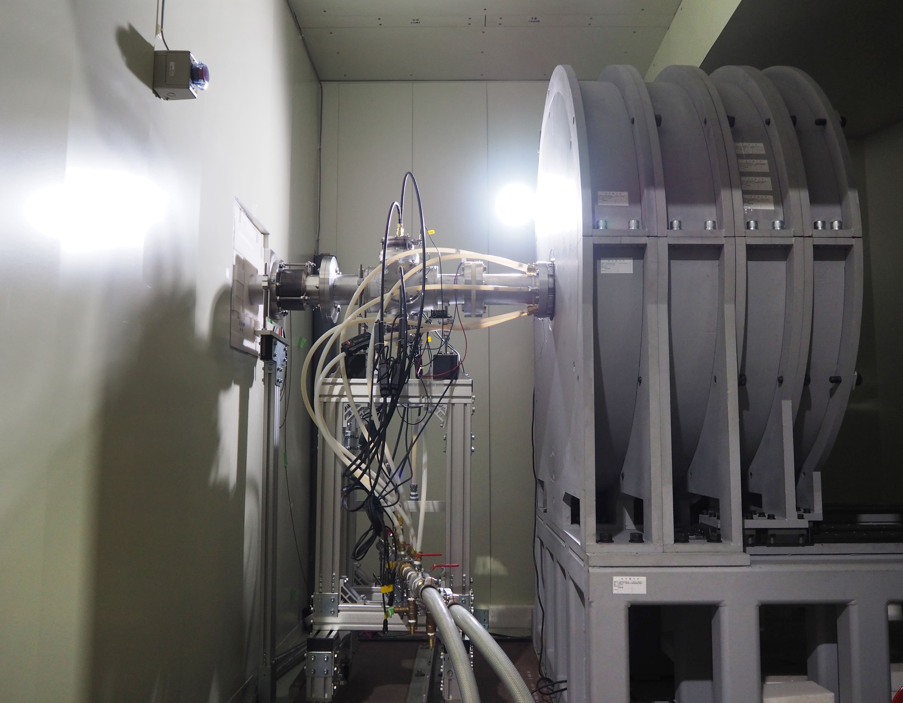
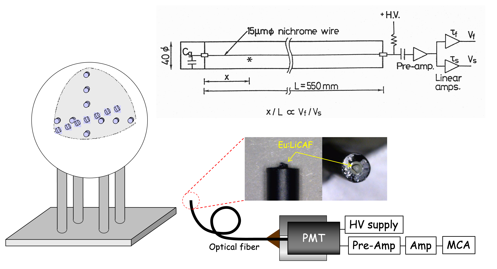
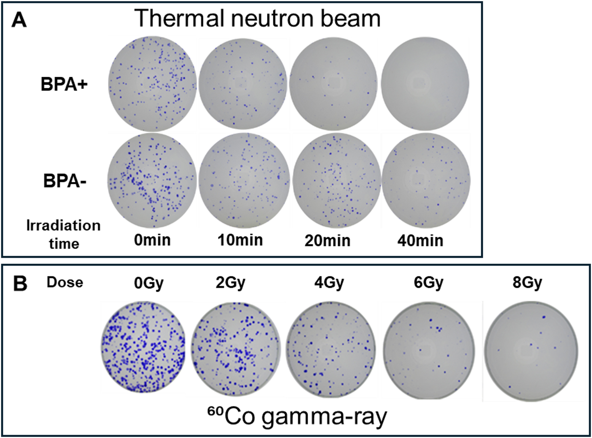

Study
Research Themes
Approach 01
~ Accelerator Physics ~
(Development of Neutron Generators)
(Development of Neutron Generators)
Our laboratory is equipped with an accelerator designed
for BNCT (NUANS). We also utilize other facilities (e.g., MS10
electron accelerator).

Approach 02
~ Neutronics ~
(Advanced Neutron Measurement Technologies)
(Advanced Neutron Measurement Technologies)
Our laboratory develops advanced neutron measurement technologies.
Applications include BNCT, fusion reactor (JT-60SA),and Fukushima Daiichi
Nuclear Power Station decommissioning.

Approach 03
~ Cell damage Analysis ~
(Biological Effects & Applications)
(Biological Effects & Applications)
We evaluate the biological effects of neutrons by investigating colon-assay or gamma-H2AX foci, i.e. to
understand the cell survival and double strand break repair mechanism in cells.
